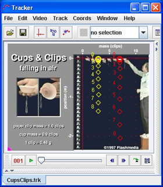

Terminal Velocity
This video shows a set of cupcake cups dropped from rest. The cups have paper clips attached to give them mass and stability.
Why does the terminal velocity vary with the mass? Is it a linear dependence?
